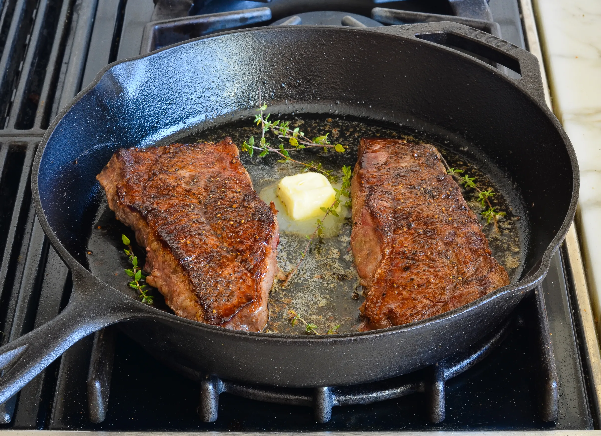

Pan Seared Steak Recipe

Description
I love the kind of dinner that you can cook without a recipe. The truth is, good cooking is more about technique
than recipes and the best dishes are often the simplest to prepare. A properly cooked steak is case in point.
With just a few ingredients and a single pan, you can cook a steak that's as delicious as one you'd order in a
high-end steakhouse.
The key is knowing how to pan-sear. Pan-searing is a classic technique in which the surface of the food is cooked
undisturbed in a very hot pan until a crisp, golden-brown, flavorful crust forms. It's the key to building
flavor and texture in a dish. It also prevents sticking and gives your food a restaurant-quality look.
Pan-searing is the absolute best way to cook a steak (salmon, too), and it also happens to be the easiest.
Ingredients
- 2 (12-oz) New York strip or ribeye steaks or 4 (6-oz) filet mignons, about 1½ inches thick
- 1 heaping teaspoon kosher salt
- ½ teaspoon freshly ground black pepper
- 2 tablespoons vegetable oil
- 1 tablespoon unsalted butter
- A few sprigs fresh thyme leaves
Instructions
- To begin, pat the steaks dry with paper towels.
- Season the steaks all over with the salt and pepper.
- Turn on your exhaust fan and heat a heavy pan (preferably cast iron or stainless steel) over medium-high
heat until it's VERY hot.
- Add the oil to the pan and heat until it begins to shimmer and move fluidly around the pan.
- Carefully set the steaks in the pan, releasing them away from you so the oil doesn't splatter in your
direction. The oil should sizzle.
- Leave the steaks alone! Avoid the temptation to peek or fiddle or flip repeatedly; the steaks need a few
minutes undisturbed to develop a golden crust. Flip the steaks when they release easily and the bottom is a
deep-brown color, about 3 minutes. Continue to cook the steaks for another 3 to 4 minutes on the second side
for rare to medium-rare. (For medium, cook 4 to 5 minutes on second side; for well-done, cook 5 to 6 minutes
on second side).
- During the last minute of cooking, add the butter and thyme sprigs to the pan with the steaks.
- If you are serving the steaks unsliced, transfer them to plates and serve hot. If you plan to slice the
steaks, transfer them to a cutting board and let rest, covered with aluminum foil, for 5 to 10 minutes; then
slice thinly against the grain.